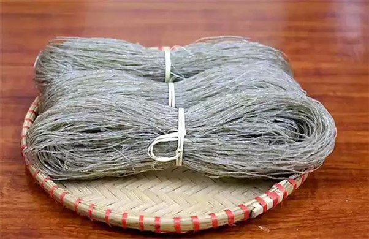
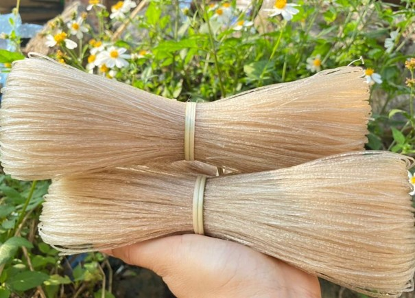

Miến dong
Có một loại đặc sản Cao Bằng rất phù hợp mua về ăn hay làm quà tặng cho những người bị bệnh tiểu đường, đó chính là miến dong. Bởi trong miến dong có chứa rất nhiều protein, ít tinh bột, tốt cho sức khỏe.
Miến dong Cao Bằng nổi tiếng vì được làm hoàn toàn từ củ dong đỏ trồng trên các sườn núi cao. Khi ăn sẽ đậm vị hơn các loại miến khác, đồng thời sợi miến cũng dai, gòn hơn. Đặc biệt miến khi để lâu cũng không bị trương to và mềm nhũn giống như nhiều loại miến có trên thị trường.
Tuy nhiên, khách du lịch Cao Bằng cũng nên chú ý, tìm tới các cơ sở uy tín, có thương hiệu để tránh mua phải sản phẩm giả, kém chất lượng.